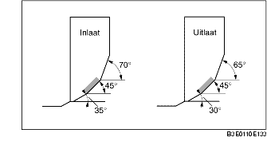

CONTROLE/REPARATIE KLEPZITTING
B3E011010102201
1. Meet de breedte van het contactvlak.
-
• Corrigeer indien nodig de klepzitting met een frees van 45° en/of corrigeer de klepschotel.
-
Standaardbreedte:
-
1,2-1,6 mm {0,048-0,062 in}
2. Controleer of de klepzitting midden op de rand van de klepschotel valt.
-
(1) Corrigeer de klepzitting met een frees van 70° (Inlaat) of 65° (Uitlaat), en een frees van 45° als het contactvlak te ver naar buiten zit.
-
(2) Corrigeer de klepzitting met een frees van 30° (Inlaat) en 0°(Uitlaat) en een frees van 45° als het contactvlak te ver.naar binnen zit.

3. Controleer de diepteligging van de klepzitting. Meet de lengte van het uitstekende gedeelte van de klepsteel (afmeting L).
-
• Vervang de cilinderkop als de waarde niet aan de specificaties voldoet.
-
Standaardafmeting L:
-
Inlaat: 40,64-42,24 mm {1,600-1,662 in}
-
Uitlaat: 40,50-42,10 mm {1,595-1,657 in}